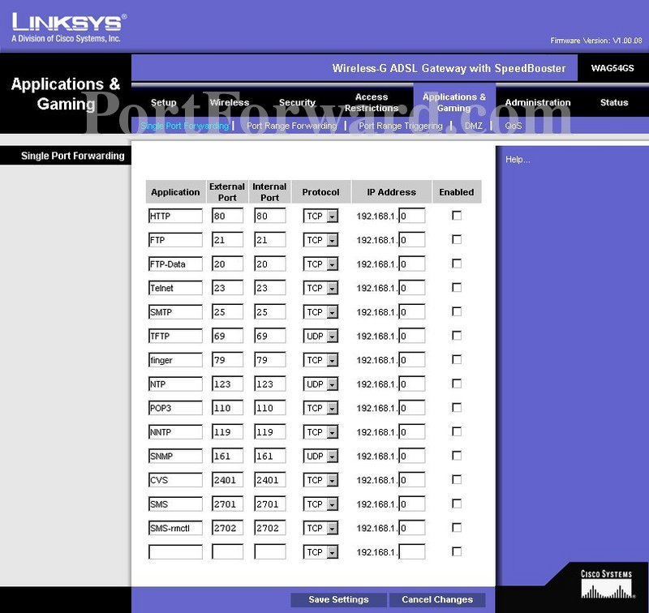

5.2. Apertura de puertos
También llamado Forwarding o Reenvío de puertos. Se puede configurar de diversas maneras:
Si trabajamos sobre un ROUTER, y queremos hacer accesible algún servicio en nuestra red desde el exterior, debemos configurar el dispositivo de manera que las peticiones que lleguen por la interfaz externa al puerto correspondiente, las redirigimos a la IP donde se encuentre alojado ese servidor.
{kind=link}
Si trabajamos, como en nuestro caso, configurando un SISTEMA OPERATIVO como Router, tenemos diferentes opciones, en función del SO:

WINDOWS: Con comando netsh (ejemplo en la web)
LINUX: También, con IpTables.
# iptables -A PREROUTING -t nat -i eth0 -p tcp --dport 80 -j DNAT --to 192.168.1.2:8080 # iptables -A FORWARD -p tcp -d 192.168.1.2 --dport 8080 -j ACCEPT
Advertencia
En el código anterior :
Eth0: nombre int. Externa del servidor.
80 puerto donde se reciben las conexiones externas
192.168.1.2: IP interna del equipo destino.
8080: Puerto en el equipo destino.
Otro de los ejemplos en los que usarás la redirección de puertos es el funcionamiento de los contenedores, en los cuales se redirigen puertos de la máquina anfitrión a puertos contenedor.
$docker run -d -p 8080:80 nginx:alpineImportante
En el comando anterior se ejecuta como demonio (-d) el contenedor nginx:alpine, redirigiendo el puerto 8080 de la máquina anfitrión al puerto 80 del contenedor (-p 8080:80).